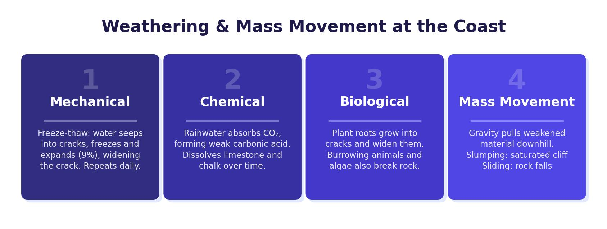

Rock Type and Coastal Shape
The shape of a coastline depends on the type of rock it is made from. Some rocks are hard and resistant to erosion (such as granite, limestone and chalk), while others are soft and erode quickly (such as clay and sandstone). Where hard and soft rocks are found side by side, the coast is eroded at different rates, creating distinctive landforms.
Concordant and Discordant Coastlines
A concordant coastline has rock layers running parallel to the shore. The waves hit the same type of rock along its length. A discordant coastline has alternating bands of hard and soft rock running at right angles to the shore. The Jurassic Coast in Dorset is a well-known example of a discordant coastline.
Erosional Landforms
Headlands and Bays
On a discordant coastline, the softer rock is eroded more quickly by hydraulic action and abrasion, forming an indent called a bay. The harder, more resistant rock is left jutting out into the sea as a headland. At Swanage Bay, the hard chalk and limestone form headlands (Ballard Point and Peveril Point), while the softer clay between them has been eroded to form the bay.
Headlands and bays form on discordant coastlines where alternating hard and soft rock runs at right angles to the shore. The soft rock erodes faster, creating a bay, while the hard rock remains as a headland.

Caves, Arches, Stacks and Stumps
Once a headland is exposed, it is attacked by waves from all sides. The formation sequence is:
Crack
Hydraulic action forces air into a weakness or joint in the headland, gradually widening it into a large crack.
Cave
Continued hydraulic action and abrasion widen the crack into a cave. The cave grows larger as waves compress air inside it.
Arch
If the cave is eroded right through the headland, it forms a natural arch with open air above and sea below.
Stack
The roof of the arch is weakened by weathering and wave erosion until it collapses, leaving a tall pillar of rock called a stack standing separate from the headland.
Stump
The stack is further eroded at its base until it collapses into a low, flat stump, visible only at low tide. Old Harry Rocks at Studland in Dorset show stacks and stumps at various stages.
Cliffs and Wave-Cut Platforms
Waves attack the base of a cliff between the high and low tide marks through hydraulic action, abrasion and solution. This erosion creates a wave-cut notch. Over time, the notch deepens and the rock above is left unsupported as an overhang. Eventually the overhang becomes too heavy and collapses. This process repeats, causing the cliff to retreat inland.
The flat area of rock left behind at the base of the retreating cliff is called a wave-cut platform. It slopes gently towards the sea (about 3–4°) and is only exposed at low tide. Rock pools, seaweed and barnacles are commonly found on wave-cut platforms. Washing Ledge on the Jurassic Coast is a good example.
The Jurassic Coast stretches along the south coast of England through Devon and Dorset. Its rocks are up to 250 million years old and contain many dinosaur fossils from the Jurassic period. The coastline displays a wide range of landforms because it has both concordant and discordant sections. Lulworth Cove is a famous example of a cove on the concordant section — waves broke through the hard limestone at the front and then rapidly eroded the softer clay behind, creating a near-circular bay.
Depositional Landforms
Beaches
A beach is the zone of deposited material that extends from the low water mark to the limit of storm waves. Beaches form in sheltered environments like bays, where constructive waves deposit sediment. The beach profile shows larger material (pebbles and shingle) higher up the beach — thrown there by high-energy storm waves — and finer sand near the low water mark, deposited by lower-energy waves. Chesil Beach in Dorset is one of the UK’s most famous shingle beaches.
Sand Dunes
Sand dunes form above the high water mark where onshore winds blow dry sand inland. Sand collects around obstacles such as rocks or driftwood, forming small embryo dunes. As vegetation like marram grass colonises the sand, its roots bind the grains together and the dunes become more stable. Over time, dunes grow taller and develop further inland. Mature dunes can reach 15 metres. Occasionally, high winds create a “blowout” — a hollow where loose sand has been blown away.
Spits
A spit is a long, narrow ridge of sand or shingle that is attached to the mainland at one end and extends out to sea at the other. Spits form where longshore drift carries sediment past a change in the direction of the coastline (such as a river estuary). The sediment is deposited in the sheltered water beyond the headland. Changes in wind direction can curve the end of the spit inland, forming a hooked tip. Salt marshes often develop in the sheltered water behind the spit.
A spit cannot grow all the way across an estuary because the river current is strong enough to carry sediment out to sea, preventing the spit from joining the opposite bank.
Bars and Tombolos
If a spit grows across a bay where there is no river to break it up, it can join two headlands to form a bar. A lagoon of trapped water often forms behind the bar. A tombolo is a special type of bar that connects an island to the mainland.
Think of deposition as the sea “building” features. Beaches are the simplest — sediment dropped in sheltered areas. Spits are beaches that “grow” past a change in coastline direction. Bars are spits that have grown all the way across a bay. Sand dunes are wind-blown sand above the beach. Each one is formed because the sea (or wind) loses energy and drops material.